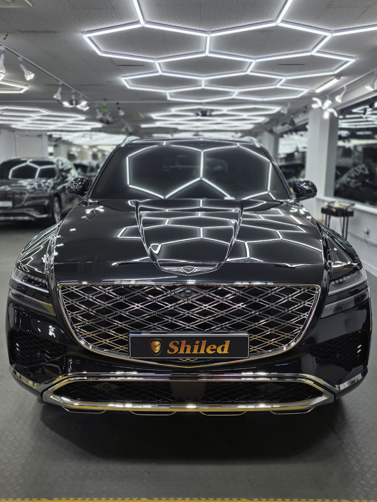
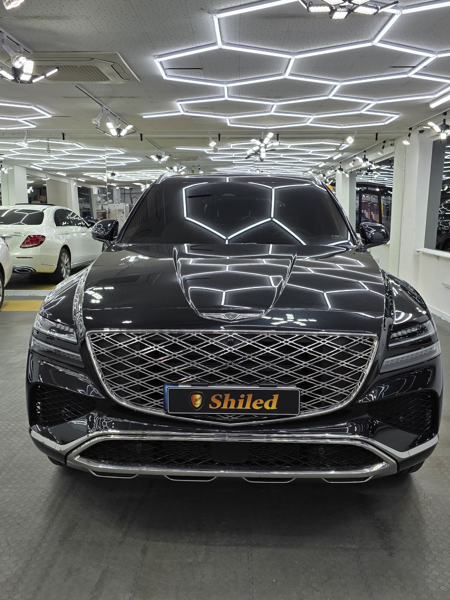
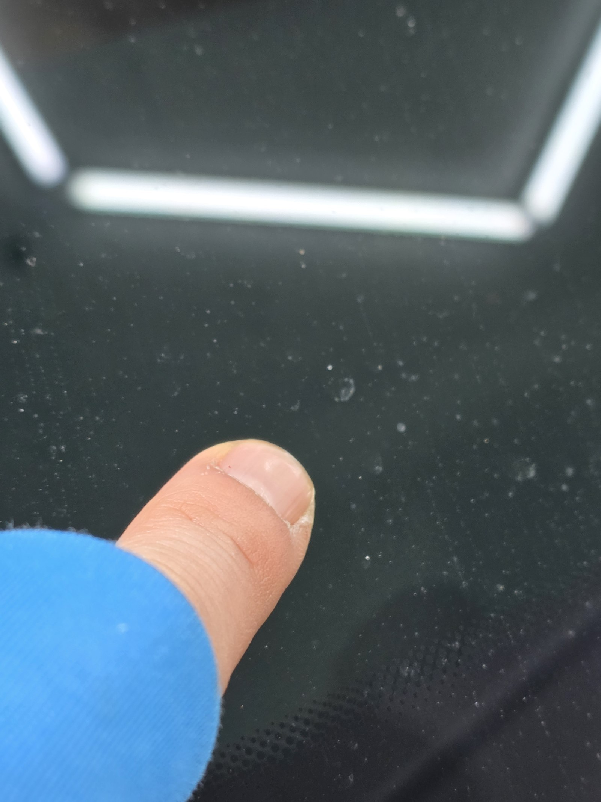
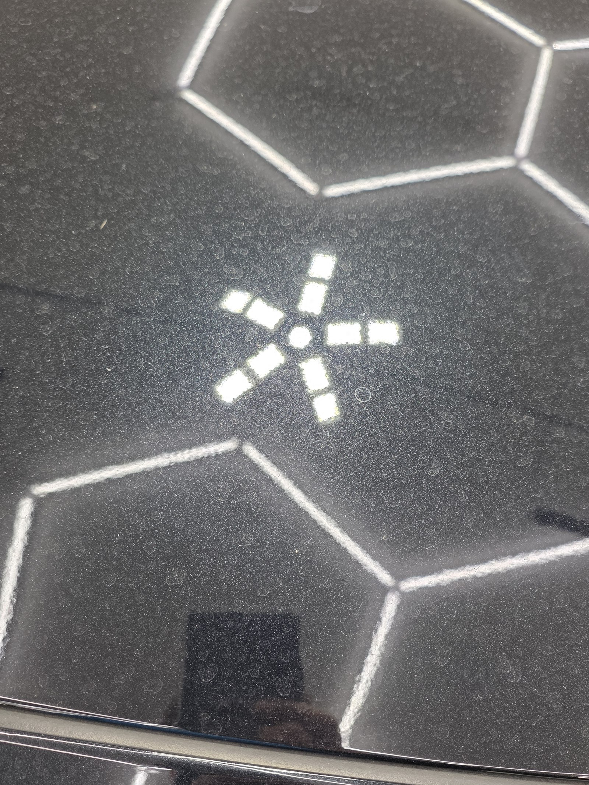
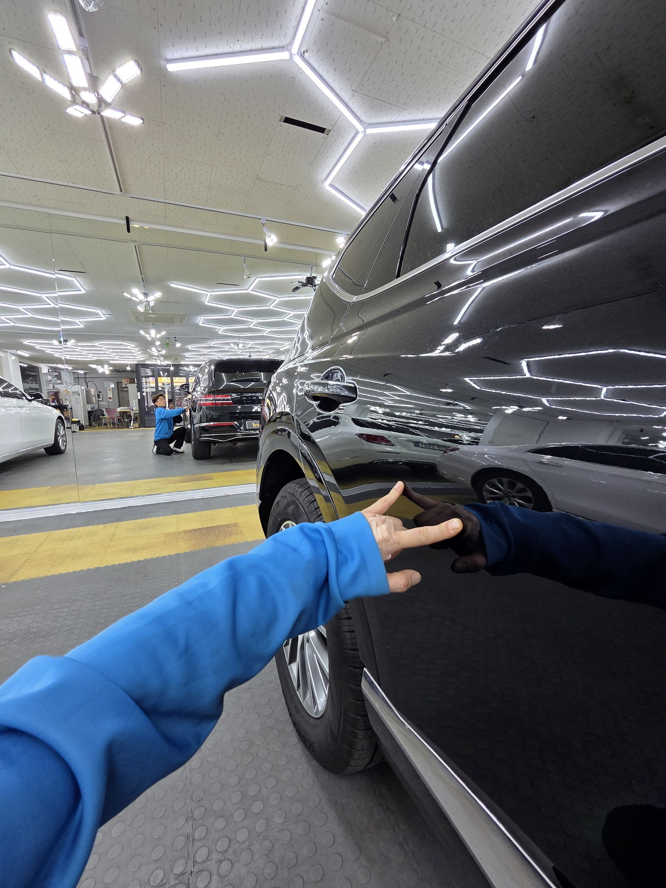
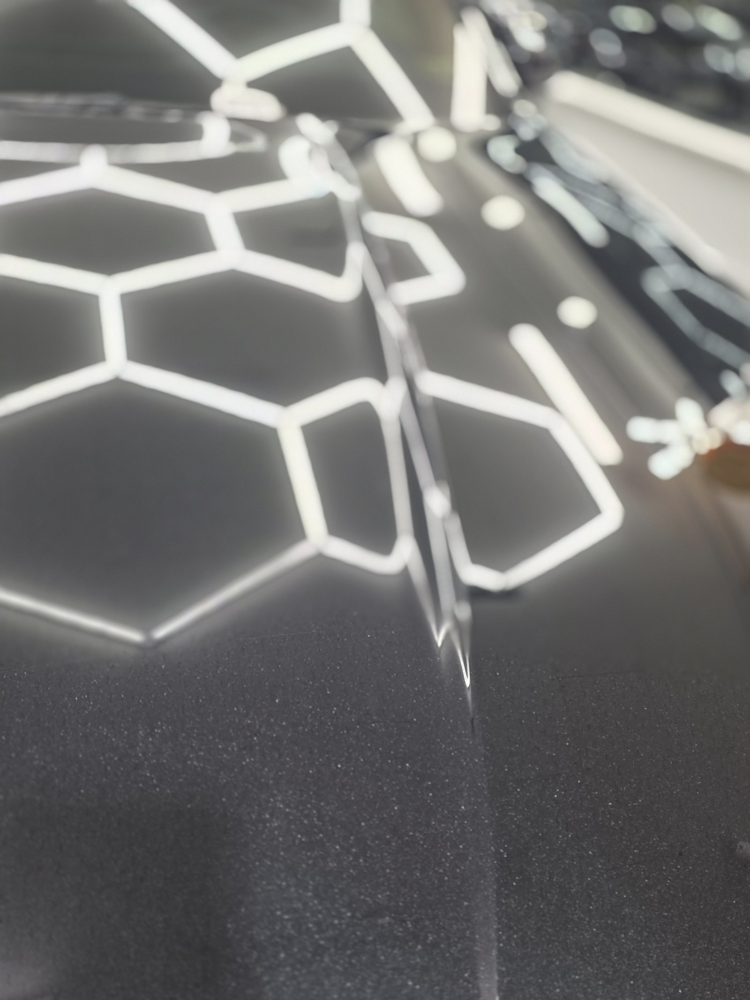
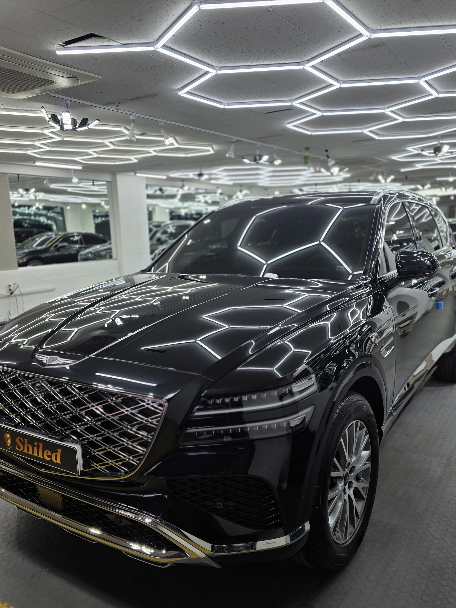
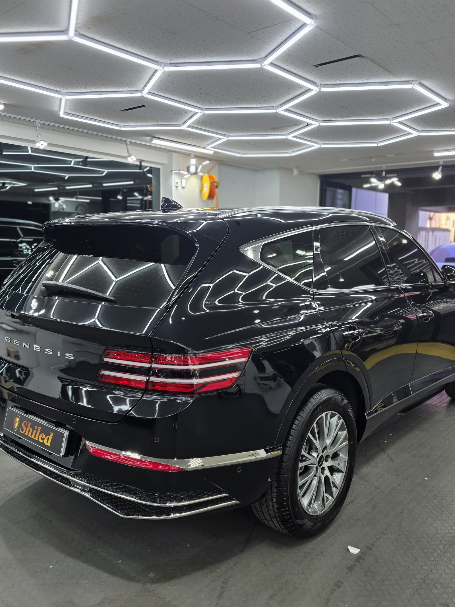

제네시스 GV80 검정입니다.
멀리서 보면 멀쩡합니다. 조명 아래 반사도 그럭저럭 잡힙니다.
그런데 손등으로 도장면을 훑는 순간 답이 나왔습니다. 페인트 날림입니다.

작업을 마친 뒤 모습입니다

입고 당시. 멀리서는 표가 잘 안 납니다
페인트 날림, 왜 눈에는 잘 안 보이나요
도료 입자가 워낙 작기 때문입니다.
근처에서 도장 작업이나 공사가 있으면 공중에 흩어진 도료가 미세한 방울로 날아옵니다. 그게 차체 위에 내려앉아 그대로 굳습니다. 한 알 한 알은 먼지 크기라 두세 걸음만 떨어져도 잘 안 보입니다.
문제는 가까이 갔을 때입니다. 조명을 바짝 대고 들여다보면 표면 전체가 미세한 알갱이로 뒤덮여 있는 게 드러납니다.

같은 도장면, 클로즈업. 하얀 알갱이가 빼곡하게 앉아 있습니다
사진에서 보이는 하얀 점들이 전부 굳은 도료입니다.
세차를 아무리 해도 이 알갱이는 안 빠집니다. 물과 세제는 표면 먼지만 씻어낼 뿐, 클리어코트 위에 붙어 굳은 입자까지는 손을 못 댑니다.
부산 광택, 페인트 날림인지 확인하는 방법
가장 정확한 방법은 손끝으로 직접 쓸어보는 것입니다.
맨손보다는 비닐봉지를 씌우고 훑으면 더 확실하게 잡힙니다. 눈으로 안 보여도 손끝에 까끌거림이 걸리면 그건 먼지가 아니라 굳은 도료입니다.

본넷 클로즈업. 조명 라인이 또렷하지 않고 번져 보입니다
기술자의 팁
페인트 날림이 있는 도장면은 조명 윤곽이 항상 흐트러져 보입니다. 빛이 알갱이에 부딪혀 산란하기 때문입니다. 반사가 또렷하지 않고 번져 보인다면 손으로 만져보시기 전에 이미 의심해볼 만합니다.
부산 광택, 페인트 날림은 어떤 순서로 잡나
바로 갈아내면 안 됩니다. 그게 제일 중요합니다.
굳은 입자가 도장면 위에 얹혀 있는 상태에서 패드를 대면, 그 입자가 연마재처럼 도장을 긁고 지나갑니다. 없던 상처를 만드는 셈입니다.
그래서 순서를 지킵니다.
① 디테일링 세차와 철분 제거로 표면 오염부터 걷어냅니다.
② 점토와 전용 약품으로 굳은 도료 입자를 하나씩 떼어냅니다.
③ 광택으로 그 과정에서 남은 미세 자국과 헤이즈를 정리합니다.
GV80은 패널이 큼직하고 면이 넓어서 ②에 시간이 가장 많이 들어갑니다. 넓다고 힘으로 미는 게 아니라 구역을 나눠서 같은 밀도로 훑어야 얼룩이 안 남습니다.

작업 전 상태를 손끝으로 확인하는 과정
마감 후, 무엇이 달라졌나
알갱이에 부딪혀 흩어지던 빛이 곧게 맺히기 시작했습니다.
같은 자리에 조명을 대면 이제는 육각 라인이 흐트러짐 없이 그대로 뻗어 내립니다. 손끝으로 쓸어도 걸리는 게 없습니다.

같은 본넷, 작업 후. 육각 조명이 왜곡 없이 맺힙니다

작업 완료. 반사가 끊기지 않고 이어집니다

이번 GV80은 광택 시공으로만 마감했습니다.
입자를 떼어내는 과정에서 클리어코트 표면이 한 번 정리되기 때문에, 이후 오염이 덜 앉게 관리하고 싶으시면 코팅을 별도로 상담받으시는 것도 방법입니다. 다만 이번 작업 범위는 광택까지였습니다.
자주 묻는 질문
Q. 페인트 날림은 세차로 지워지지 않나요?
A. 지워지지 않습니다. 공중에 흩어진 도료가 미세한 방울 상태로 내려앉아 클리어코트 위에서 그대로 굳기 때문입니다. 물과 세제로는 표면 위 먼지만 씻겨나가고, 굳어버린 도료 입자는 손끝에 사포처럼 그대로 걸립니다.
Q. 페인트 날림인지는 어떻게 확인하나요?
A. 손끝으로 도장면을 쓸어보는 것이 가장 정확합니다. 눈으로는 먼지처럼 보여도 손끝에 까끌거림이 걸리면 굳은 도료 입자가 자리 잡은 상태입니다. 비닐봉지를 손에 씌우고 훑으면 맨손보다 훨씬 확실하게 잡힙니다.
Q. 페인트 날림 제거는 어떤 순서로 하나요?
A. 먼저 디테일링 세차와 철분 제거로 표면 오염을 걷어냅니다. 그다음 점토와 전용 약품으로 굳은 도료 입자를 물리적으로 떼어내고, 마지막에 광택으로 그 과정에서 생긴 미세 자국까지 정리합니다. 순서를 건너뛰고 바로 갈아내면 입자가 도장면을 긁고 지나갑니다.
Q. 페인트 날림 제거 후 코팅도 같이 해야 하나요?
A. 꼭 필요한 것은 아닙니다. 이번 GV80은 광택 시공만으로 마감했습니다. 다만 입자를 떼어내는 과정에서 표면이 한 번 정리되기 때문에, 이후 오염을 덜 앉히고 싶으시면 코팅을 별도로 상담받으시는 것을 권합니다.
Q. 쉴드광택 위치와 예약은 어떻게 하나요?
A. 부산 남구 유엔로220 1F 쉴드광택입니다. 예약·상담은 010-3384-1850, 대표 최한중이 직접 상담하고 책임 시공합니다.
손으로 쓸었을 때 까끌거린다면 그건 먼지가 아닙니다.
제품을 직접 만드는 사람이 직접 작업합니다.
부산에서 페인트 날림 제거와 광택을 고민 중이시면 편하게 연락 주십시오.
어떤 차를 타냐보다 어떻게 타냐가 중요합니다~!
시공 중에는 전화를 받지 못할 때가 많습니다.
카카오톡으로 차종과 원하시는 시공을 남겨주시면 확인 후 답변드립니다.
쉴드광택 · 부산 남구 유엔로220 1F · 대표 최한중